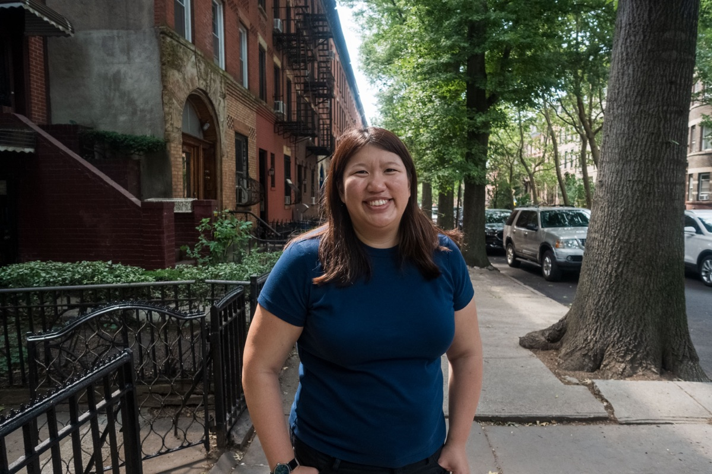

About
Hi, I'm Bessie.
I recently spent three years in Taiwan in global product management and managing relationships with technology partners in NA, EU, and APAC. I'm a seasoned platform and infrastructure product leader with ten+ years of experience in both start-up and big corporate settings. I'm into responsible tech, female-led investing, and international business.
- Based in
- NYC & Los Angeles
- Most recently
- Samba TV, Taiwan
- Experience
- 10+ years, start-up to enterprise
- Education
- UCLA × NUS Executive MBA
- Board
- UC Davis Alumni Association
- Into
- Responsible tech, female-led investing

Working with people I love to spend time with, feel like I can grow, learn with, be proud of, and respect. Value and mission alignment. Product that actually works, helps people, and respects society.
Professional Journey
-
San Francisco
Start-Up Roots
I started my career at an SF start-up, which has informed my builder's ethos for my entire career.
-
USC
ML/NLP-based Research on Sports Fandom
I got a big break working on a research project using ML/NLP to explore sports fandom at USC.
-
New York
Data Visualization → Infrastructure, Scaling Data Platforms & Privacy
That opportunity led me to New York City, where I helped build a data visualization practice and later expanded my work into data infrastructure and privacy-focused products. Since then, I’ve worked across data companies of all sizes, learning how to operate within large corporate environments while maintaining a builder's mindset.
-
UCLA × NUS
Executive MBA, Technology & Asia
I completed a joint Executive MBA program run by UCLA and the National University of Singapore with a focus on technology and Asia, gaining a higher level of emotional intelligence and understanding how to work with institutional differences across regions.
-
Taipei
Samba TV
My most recent FT role was at Samba TV in Taiwan, a San Francisco–based technology company specializing in TV viewership data. There, I partnered with SoC manufacturers and TV OS/OEMs to integrate and innovate on automatic content recognition and AI capabilities at the chipset level.
-
Now
Consulting
I currently consult as a super IC for AI start-ups looking to scale. Work with me.
What I Excel In
-
01
Storytelling
Connect metrics and product development to a larger narrative and goals
-
02
Pattern Matching & Systems Thinking
Spot blockers and opportunities by identifying 2nd and 3rd order effects before they surface
-
03
International Operations
Find levers that align global teams and build strategic alliances
-
04
Product Craft
Develop products that unlock partner ecosystem revenue through developer tools, platform-oriented approaches, integrations, and scalable frameworks
What I Look for in Collaborating
- Solving real problems in a way that respects and benefits users
- A growth phase business looking to scale
- Ideally an international component with hubs in NYC and/or LA
Outside Work
- I'm into food, watches, sports, and reading
- I volunteer as a mentor and also seek out reverse mentorship
- I'm a member of the Board of Directors for the UC Davis Alumni Association where I am standing up an alumni-to-alumni mentorship program
Let's Connect
I'm always happy to talk about product management, navigating career transitions, and the enduring dream of the open internet.